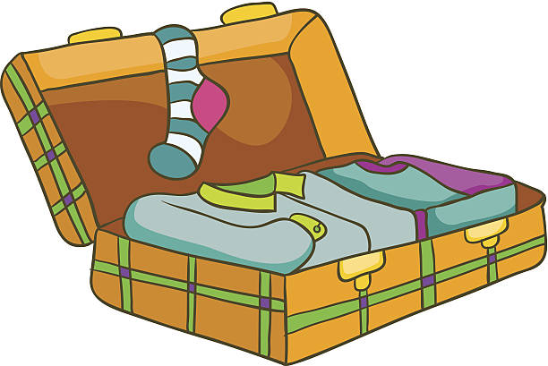
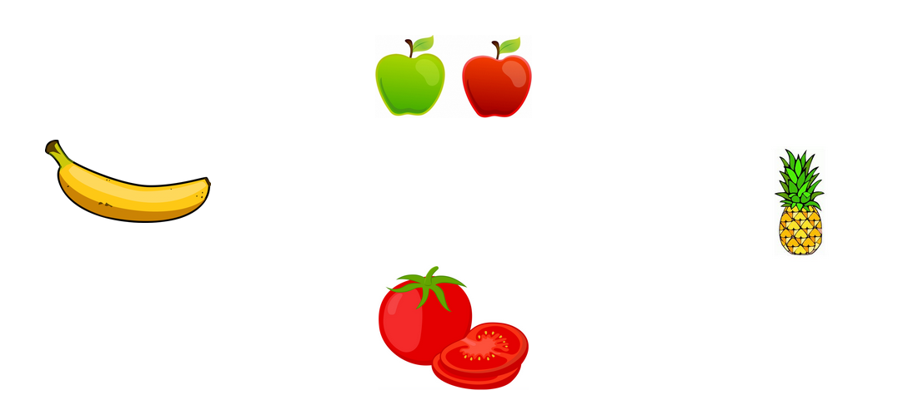
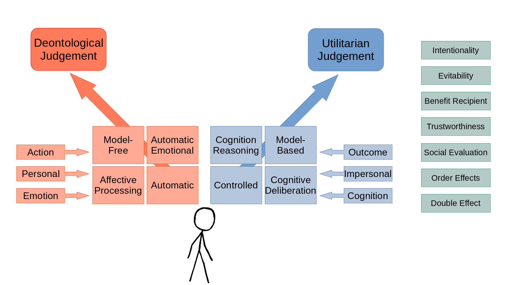
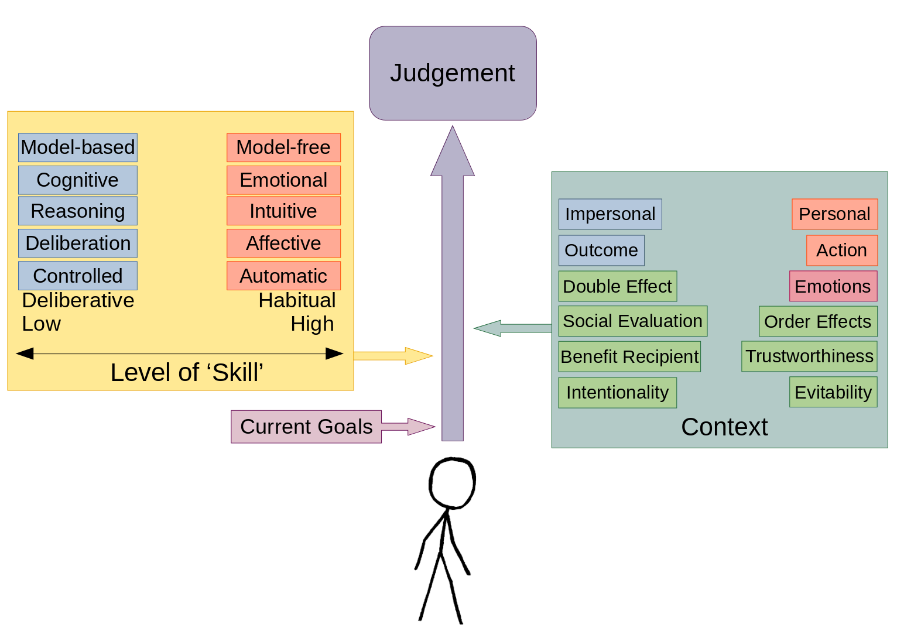
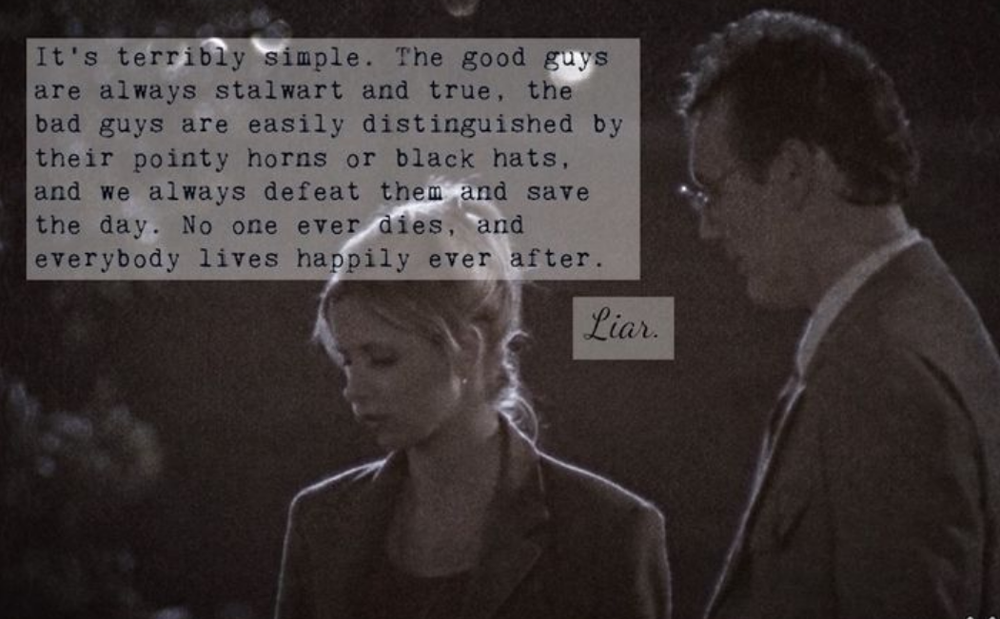

Moral Judgment as Categorization (MJAC) - Explanation and Development
In what follows I will attempt to provide an overview of my recently published theoretical work, covering the main ideas behind the theory, while also describing the process of its development, from initial conception to final publication.
(presentation to IMP seminar series 31st May 2021)
(Poster presentation to SPSP 2022)
Background
I never intended to develop a new theory of moral judgement, it just sort of happened. When I started my PhD I wanted to understand how people make moral judgements, and when I studied the available approaches they didn’t quite provide the answers I was looking for. For example Prinz (2005) over-stated the role of emotion in moral judgements: ‘Emotions, I will suggest are perceptions of our bodily states. To recognise the moral value of an event is, thus, to perceive the perturbation that it causes’ (Prinz 2005, 99). Haidt (2001) draws on analogy rather than providing an account for the underlying cognitive mechanisms, e.g., describing intuitions as phonemes (Haidt 2001, 827), ‘brain has a kind of gauge’, a ‘like-ometer’ (Haidt and Björklund 2008, 187). Greene (2008) distinguishes between cognition and emotion, though these are not well defined. The Theory of Dyadic Morality (Gray, Young, and Waytz 2012; Schein and Gray 2018) provides an account that is based on the content of moral judgements, rather than the underlying cognitive mechanisms.
So having failed to find the answers I was looking for in the morality literature, I broadened my reading, looking at the emotion literature, and research on learning and knowledge acquisition. This led me to the works of Lisa Feldman Barrett, and Lawrence Barsalou (Barrett, Wilson-Mendenhall, and Barsalou 2014; Barsalou 2003). Initially I thought this provided a potential framework for understanding the role of emotions in moral judgement, however when I attempted to apply this framework, it became apparent that it also provided a framework for understanding moral judgment more generally. This realization came from an extensive survey of both the categorization and morality literatures. Barsalou (2003) defended his theory of categorization by highlighting the dynamic and context dependent nature of categorization, the same kinds of variability and context dependency were present in the morality literature, these parallels are shown in Table 1.
| Phenomenon | Categorization | Morality | |
| Variability | Interpersonal | ✓ | ✓ |
| Intrapersonal | ✓ | ✓ | |
| Context | Culture | ✓ | ✓ |
| Social | ✓ | ✓ | |
| Development | ✓ | ✓ | |
| Emotion | ✓ | ✓ | |
| Framing | ✓ | ✓ | |
| Order/recency | ✓ | ✓ | |
| Other | Skill | ✓ | ✓ |
| Typicality | ✓ | ✓* | |
| Dumbfounding | ✓** | ✓ |
Moral Categorization
The idea behind Moral Judgement as Categorization (MJAC - pronounced em-jack), is that making moral judgements involves the same cognitive processes as categorization more generally. There are three core premises and two core predictions of the approach as follows:
Premises
Making of a moral judgment is a process of categorizing something as morally right or morally wrong (or indeed not morally relevant).
The process of categorization involved in the making of a moral judgment is a domain-general one (not unique or specific to the moral domain).
Moral categorization occurs as part of ongoing goal-directed behavior and thus is highly dynamic and sensitive to a range of contextual influences.
Core Predictions
Stability emerges through continued and consistent repetition and rehearsal
Robustness emerges through consistency across multiple contexts
According to MJAC, what others describe as moral ‘intuitions’ (e.g., Haidt 2001) are categorizations that have become highly skilled or automatic, through practice.
Understanding MJAC
There are two examples that help to illustrate the assumptions of the categorization processes that MJAC is grounded in.
Things to Pack Into a Suitcase
Consider the formation of the category Things to Pack Into a Suitcase (Barsalou 1991). Items that fall into this category (toothbrush, spare clothes, etc.) are not generally categorized as such on a day-to-day basis. The category emerges as required: when a person needs to pack things into a suitcase. A person who travels frequently will be able to form the category things to pack into a suitcase more readily because of repetition and the emerging skill. Barsalou (2003) argued that categorization more generally occurs through the same process. What we think of as ‘Stable’ categories, are categorizations that have become habitualized or skilled, as part of goal-directed activity.

Fruit
To illustrate how our every-day categorizations are shaped by goal-directed activity, consider the category Fruit. Typical members of the category include items such as apples, and oranges. Fruit is defined as containing the seeds, and by this definition, items such as tomato also fall into this category. However, we do not generally interact with tomatoes in the same way as we interact with other Fruit, so while it is defined as Fruit, we generally don’t think of it as Fruit.

We extend this basic process to moral categories. When people encounter a behavior in certain circumstances, they may learn that it is morally wrong, and this behavior becomes associated with the category morally wrong. Each subsequent time this behavior is encountered in a context in which its moral value is relevant or it is identified as a member of the category morally wrong (either explicitly or implicitly), the person’s skill in deploying this category is strengthened. This same process holds for morally right. With the increasing frequency of such categorizations, they become increasingly habitual and automatic (see Barsalou 2003).
Applying MJAC
This approach to understanding moral judgements provides a novel perspective on how we understand particular moral phenomena.
Moral Dumbfounding
Moral dumbfounding occurs when people defend a moral judgment even though they cannot provide a reason to support it (Haidt, Björklund, and Murphy 2000; Haidt 2001; McHugh et al. 2017, 2020). Moral dumbfounding is most frequently obeserved for harmless taboo behaviors (consensual incest, cannibalism involving a body that is already dead). The taboo nature of these topics means that they are consistently identified as morally wrong without much discussion [the Scottish public petitions committee notably dismissed a call to legalize incest with no discussion at all; see Sim (2016)]. This leads to a high degree of stability in categorizing them as wrong. However, the taboo nature of these behaviors prevents them from being discussed. This means that a typical encounter with such behavior involves little more than identifying it as wrong, possibly with an expression of disgust, and changing the subject. Because of this combination of stability and This process logically leads to moral dumbfounding.
Categorizing people versus categorizing actions
MJAC predicts people’s judgements will focus on the actor or on the action depending on the situation. Consider the following two scenarios:
- You find out that a colleague has been fired for stealing from your employer—they have been bringing home office equipment for their own personal use, and they have been exaggerating their expense claims.
- A close friend of yours reveals to you that they have been stealing from their employer—they have been bringing home office equipment for their own personal use, and they have been exaggerating their expense claims.
MJAC predicts that people will be more lenient in their judgments of the person in the second scenario than the in first scenario. Indeed this is consistent with what is found in the literature (Heiphetz and Craig 2020; Forbes 2018; Lee and Holyoak 2020; Hofmann et al. 2014; Weidman et al. 2020).
A further prediction is that for the second scenario, people will focus on the action rather than the actor. People are motivated to see close others positively (Forbes 2018; Murray, Holmes, and Griffin 1996a, 1996b). If faced with a situation in which a close other did something wrong, people would try to avoid making a negative judgment of the person (Ditto, Pizarro, and Tannenbaum 2009; Murray, Holmes, and Griffin 1996a, 1996b). One way to avoid this is to focus on the action rather than the actor. Relatedly, for favorable judgments, we expect the opposite effect. If a close other does something praiseworthy, people are likely to focus on the actor rather than the action, helping to maintain a positive view of the close other (Forbes 2018; Murray, Holmes, and Griffin 1996a, 1996b).
A key goal of moral categorization is to distinguish ‘good’ people from ‘bad’ people, to help us navigate the social world, and effectively guide our social interactions. Learning about people’s moral character or moral ‘essence’, enables us to establish relationships with ‘good’ people, and to limit our interactions with ‘bad’ people (or at least treat interactions with ‘bad’ people with caution). This means that for strangers, we are likely to show a bias for categorizing the actor rather than the action (Uhlmann, Pizarro, and Diermeier 2015; Dunlea and Heiphetz 2020; Siegel, Crockett, and Dolan 2017; Siegel et al. 2018).
Contrasting MJAC with Existing Approaches
Perhaps the most important difference between MJAC and existing approaches is that the focus of MJAC is on the cognitive processes, rather than on the content of moral judgements. According to the dominant dual-process approaches, different types of moral judgements are grounded in different types of cognitive processes. Deontological (principled or rule based) moral judgements are grounded in intuitive/automatic/emotional/model-free processes, while utilitarian or consequentialist judgements (where the aim is to maximise positive outcomes), are grounded in deliberative/controlled/cognitive/model-based processes. These different processes mean that our judgements are susceptible to specific kinds of contexual influences, e.g., how persona/impersonal an action is (Greene 2008, 2016), the relative amount of emotionality (Byrd and Conway 2019; Conway et al. 2018; Conway and Gawronski 2013; Goldstein-Greenwood et al. 2020), or whether the focus is on the action or the outcome (Cushman 2013; Crockett 2013). An overview of these approaches is displayed in Figure 3. Despite these important insights, there are a range of other context effects known to influence moral judgements that are not accounted for by these models. These other context effects are detailed in the green boxes in Figure 3.1

MJAC does not make assumptions based on the content of moral judgements. However, MJAC predicts a distinction between habitual (or skilled, or intuitive) responses, and deliberative (or controlled) responses. This distinction does not make assumptions about specific content of moral judgments. However, thinking about the contexts in which deontological vs utilitarian judgements are generally made, it makes sense that deontological rules might become more habitual (think It’s wrong to hurt people, Thou shalt not kill, You shouldn’t hit your sister), while utilitarian judgements may require more deliberation (e.g., how should we divide these resources in the fairest manner?). MJAC therefore integrates the insights of dual-process accounts, while also allowing for greater variability, and a more diverse range of context effects. Figure 4 outlines the various influences on moral judgement according to MJAC.

These differences in assumptions between MJAC and other approaches lead to differences in explanations and predictions. Above I have outlined moral dumbfounding as an example of such an explanation. The differences in assumptions and explanations are listed in Table 2. To avoid making this post too long and drawn out, I will not go into detail on these differences, however I point you to the relevant section in the main article for more detailed discussion on this.
| Greene’s Dual-process theory | “Soft” dual-process theory | Model-based accounts | TDM | MJAC | |
|---|---|---|---|---|---|
| Assumptions: | |||||
| Content | Deontology-utilitarianism / personal-impersonal | Deontology-utilitarianism | Action-outcome | Harm-based, dyadic | Dynamical Context-dependent Goal-directed |
| Moral “Essence” | (Implicit) | (Not discussed) | (Implicit) | Explicit | Rejected |
| Processes | Dual-processes | Dual-processes | Dual-processes | (implicitly dual-process) | Continuum |
| Mechanisms | Intuition (emotion) / cognition | Emotion / cognition | Model-based / model-free | Categorization (unspecified) | Type-token interpretation |
| Phenomena Explained: | |||||
| Dumbfounding (harmless wrongs) | (Not discussed) | (Not discussed) | Explained | Denied | Explained: learning history |
| Wrongless harms | (Not discussed) | (Not discussed) | (Not discussed) | Denied | Explained: learning history |
| Typicality | (Not discussed) | (Not discussed) | (Not discussed) | Matching of “prototype” | Context-dependent |
| Contextual influences | Specific: Personal-impersonal | Specific: Emotion / cognition | Specific: Action-outcome | Specific: Harm-based |
In the opening sections I outlined two general predictions of MJAC. We have also identified various specific predictions (e.g., the categorizing of actors vs actions described above). For brevity I do not go into detail on these specific predictions, but point you to the main article for this more detailed discussion (here is probably a good place to start).
Developing and Publishing MJAC
The road from initial conception, to publication of MJAC was quite long. The initial idea was formed by the Autumn of 2014. I presented this at my upgrade panel for my PhD in the Spring of 2015, and at a morality Summer School in Rotterdam in August 2015. It soon became apparent that the ideas behind MJAC were too broad to form the basis of a PhD, so it was shelved for a while, in favour of something more concrete. My PhD thesis ended up focusing on Moral Dumbfounding (though I was able to include an overview of MJAC in a final Epilogue chapter). I graduated from my PhD in 2018, and that winter I revisited MJAC to try and get it published.
Rejections
By July 2019 it was ready for submission. It received a fairly quick desk reject from the first outlet.
It went to review in the second journal we tried. I’ve had some difficult rejections, and rejections that I disagreed with, but this one was really rough. Reviewer 1 really did not like the idea. The review from Reviewer 1 contained some of the harshest review comments I have seen. A few excerpts from the (very long) review are below.
The authors compile a great deal of research findings. They argue that moral judgment is about categorization, a position that flies in the face of and does not account for the decades of research on moral judgment in developmental and educational psychology.
The paper is incoherent in narrative, inadequate and misleading in explanation, and overall does not advance the field.
The paper seems to bounce from one thing to another without a clear, coherent story. Perhaps their thin version of moral judgment is a type of categorization, one based on perceiver making the other into a dead object. But so what? What does it buy the field? How does it contribute to scholarship?
…. And rejected…some good constructive feedback, and some fairly harsh words… Skin is getting thicker with each paper #AcademicTwitter #rejected … I guess I'll try again tomorrow, for now I'm going to watch The Deuce #thedeuce https://t.co/VDKDwORhev pic.twitter.com/I6wGjajslL
— Cillian McHugh ((CillianMacAodh?)) November 7, 2019
The experience with Reviewer 1 was a bit of a blow to the confidence. We brought it to our lab and made some fairly minor changes before sending it out again. Just before the Christmas break in 2019 I submitted it to Perspectives on Psychological Science (fully expecting to receive another reject). In February 2020 I went to SPSP in New Orleans, where I also was due to present MJAC as a poster at the Justice and Morality pre-conference. Upon landing I checked my email, and was very surprised to have received an R&R.
Revisions
The reviews were really fair, but extensive. The original framing relied heavily on the parallels provided in Table 1 above. The reviewers were not convinced by this argument. We were encouraged to clearly differentiate MJAC from existing approaches, with instructions to identify and better engage with specific dual-process accounts, and with the Theory of Dyadic Morality (Schein and Gray 2018).
So the revisions were really quite tough. I approached them systematically, addressing each comment as well as was possible, and documenting how the changes made addressed each comment. Many of the comments addressed fairly deep conceptual questions, requiring extensive reading before I could begin attempting to address them. And, naturally, I shared my progress on social media:
Yup! Starting to see progress!
— Cillian McHugh ((CillianMacAodh?)) May 13, 2020
Green is done ✅
lighter green is done, but not sure if it's good enough 🤷♂️
Blue means there was nothing to be done 👌🏼
red…. well there's still time 😬🙈 https://t.co/zPehbIWlYr pic.twitter.com/YVNVtonRfW
I was also able to call on social media for help in addressing specific issues that came up while doing the revisions. The replies came in quickly, and really provided excellent resources to help with the revisions.
Simpson et al. (2016) look at third-party observers who witnessed a transgression between two targets who share a relationship, and Hofmann et al. (2018) look at social closeness and differences in desire to punish (2/2)
— Rachel Forbes ((rc_forbes?)) May 10, 2020
Following weeks of work, we had finally addressed all the reviewer comments. I was sick of it at this stage, and ready to submit. Unfortunately, the extent of the revisions meant that the manuscript was too long to submit. I noted that there is technically no word limit for submissions at Perspectives on Psychological Science, but my co-authors wisely convinced me to ask for an extension so we could cut down the words to something more manageable.
So working on major revisions of a manuscript, all comments are pretty much addressed…
— Cillian McHugh ((CillianMacAodh?)) May 20, 2020
but now we're facing the problem of length…
Original submission between 8,000 and 9,000 words
Current version is 20,000 words…
Aaaaaah
😫😖#AcademicTwitter #AcademicChatter
✂️🤔
So we spent another few weeks cutting words, and restructuring sections to be more streamlined (huge credit to coauthors in this endeavour). And eventually we submitted the revised manuscript. It was unrecognisable from the original submission.
And revised manuscript submitted! 12,037 in the end!
— Cillian McHugh ((CillianMacAodh?)) June 22, 2020
That was exhausting! 😂 https://t.co/c56NeW51Cr
We submitted the revised version in June 2020, and received a decision of Conditional Accept (with minor revisions) in September. It was fully accepted in November 2020, and published online in July 2021 (almost 7 years after the original idea was formed)
Key Points in the Revisions
I think one of the most important changes that came from the review process was the clarity in the argument. The original submission simply presented the approach, but we didn’t articulate a clear problem the approach was solving. This was a tough question to address. The range of existing approaches available means that trying to go into detail on the relative strengths and weaknesses is not feasible. In contrast, a more general approach risks over-generalizing and potentially mis-representing some approaches. As the revisions progressed this core argument presented itself. We identified the variability and context dependency of moral judgements as a challenge that is not well addressed in the existing literature. Because dynamism and context dependency are core assumptions of MJAC, this means that MJAC is well positioned to address this challenge.

References
References
Footnotes
The reader is referred to the wealth of literature examining such factors as emotional influences, Cameron, Payne, and Doris (2013); intentionality, evitability, benefit recipient, Christensen et al. (2014); Christensen and Gomila (2012); action-outcome distinction Crockett (2013); cushman_action_2013; trustworthiness and social evaluation Everett, Pizarro, and Crockett (2016); Everett et al. (2018); personal-impersonal distinction, Greene et al. (2001); doctrine of double effect, Mikhail (2000); level of physical contact, Valdesolo and DeSteno (2006); order effects, Wiegmann, Okan, and Nagel (2012)↩︎